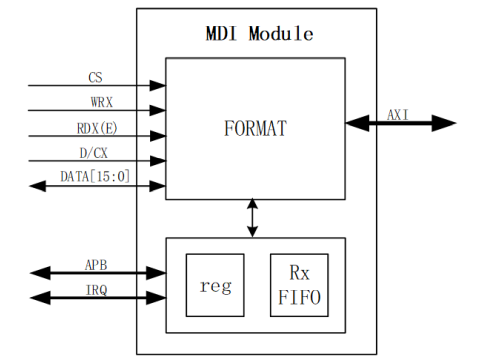
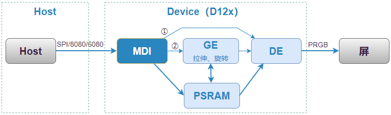

MDI 使用指南
2 Dec 2024
Read time: 1 minute(s)
Multi-Display Interface (MDI) 模块负责从外部 MCU 等系统中获取到数据，采集图像信号并输出到 RAM，然后转交给 Display Engine (DE) 去显示。在这种应用场景中，“外部 MCU” 属于 Host 角色，使用 MDI 接口的 SoC 是 Device 角色，例如 D12x，功能上相当于一颗 “屏驱芯片”。
| 术语 | 定义 | 注释说明 |
|---|---|---|
| CMA | Contiguous Memory Allocator | 连续内存分配器 |
| DBI | Display Bus Interface | 显示总线接口 |
| DPI | Display Pixel Interface | 显示像素接口 |
| MDI | MCU Display Input | 用于接收 MCU 视频数据 |
| VBI | Vertical Blanking Interval | 垂直消隐期 |
| MPP | Media Process Platform | 通用多媒体处理软件平台 |
| VIN | Video Input | 视频输入（采集）模块 |
模块特性
MDI 特性：
-
支持 8080 8/16bit 并口协议
-
支持 6800 8/16bit 并口协议
-
支持 3/4-wire SPI、2-SDA、4-SDA SPI 协议
-
8080/6800 8/16bit 支持最高 50 MHz 接口时钟频率
-
3/4-wire SPI、2-SDA、4-SDA SPI 支持最高 100 MHz 接口时钟频率
-
支持自定义的读写命令及数据
-
支持和 GE 配合完成旋转、缩放效果
-
支持局部刷新
MDI 硬件框图：

根据输入的图像格式，MDI 的数据流处理有两种情况：
-
从接口收到图像数据，按原始尺寸转交 DE 显示到屏幕上；
-
从接口收到 GE Ctrl 命令 和 图像数据，会先调用 GE 将输入图像做满屏的缩放和旋转，然后转接 DE 显示到屏幕上。
